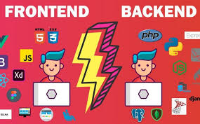

Universidad de San Carlos de Guatemala – USAC
Escuela de Formación de Profesores de Enseñanza Media – EFPEM
Programación Científica Comercial – 2024
Regresar
Conceptos Básicos
- Sitio Web
- Un sitio web es un espacio digital en línea al que se puede acceder a través de internet.

- Página Web
- Una página web es un componente de un sitio web. Es un documento digital que muestra contenido multimedia o interactivo en un navegador web.

- Hipervínculo
- Un hipervínculo o hiperenlace es un elemento presente en documentos electrónicos (como páginas web) que hace referencia a otro documento o recurso.
- URL
- Se le conose como Uniform Resource Locator, es la dirección específica que se utiliza para acceder a recursos en la web. Ejemplo: https://www.ejemplo.com.

- HTML
- Lenguaje de marcado utilizado para estructurar el contenido de una página web.

- CSS
- Es un lenguaje utilizado para el diseño y presentación visual de una página web.
- JS (JavaScript)
- Es un lenguaje de programación que se utiliza para agregar interactividad y dinamismo a las páginas web.

- DNS
- Es un sistema de Nombres de Dominio, que traduce las direcciones IP numéricas de los servidores en nombres de dominio legibles por humanos.

- IP
- Dirección de Protocolo de Internet, un número único asignado a cada dispositivo conectado a una red que utiliza el protocolo IP para la comunicación.
- Dominio Web
- Un nombre legible por humanos asignado a una dirección IP para facilitar la identificación y acceso a un sitio web específico.

- Cliente-servidor
- Modelo de arquitectura de red en el que un cliente solicita servicios o recursos para un servidor.
- FTP
- Se utiliza para transferir archivos entre un cliente y un servidor en una red.
- HTTP
- Se utiliza para la transmisión de información en la web.
- HTTPS
- Versión segura de HTTP, donde la comunicación entre el navegador y el servidor está cifrada para mayor seguridad.
- Frontend
- Es la parte de un sistema o aplicación web que le permite a los usuarios interactúan directamente.

- Backend
- La parte de un sistema o aplicación web que gestiona la lógica, la base de datos y otras funciones en segundo plano.

- Hosting
- Servicio que proporciona espacio en un servidor para almacenar archivos y hacer que un sitio web sea accesible en Internet.
- Hosting Privado Virtual (VPS)
- Un entorno de servidor virtualizado dentro de un servidor físico, que permite a los usuarios tener más control sobre su entorno de alojamiento.

- Hosting en la nube (Cloud Hosting)
- Alojamiento de sitios web en servidores virtuales que se ejecutan en una red de servidores físicos interconectados, conocida como la nube.

- W3C
- Es una organización que establece estándares para la World Wide Web con el objetivo de garantizar su crecimiento y accesibilidad a largo plazo.
"Id y Enseñad a Todos"